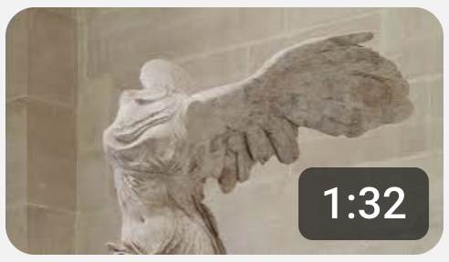

Discover the Louvre through short educational videos that explain why each masterpiece is famous, why it matters, and what to look for when you visit in person.

Discover why this armless statue became one of the Louvre's greatest treasures.
▶ Watch on YouTube